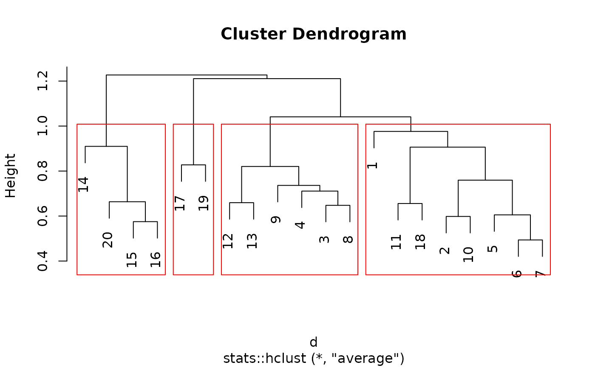
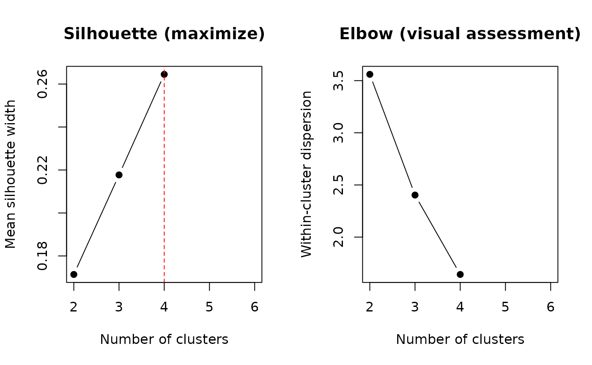

Select a Cut Level for Agglomerative Hierarchical Clustering
Source:R/bestCutLevel.R
bestCutLevel.RdBuilds an agglomerative hierarchical classification of vegetation surveys and evaluates candidate numbers of clusters using the mean silhouette width and an elbow in within-cluster dispersion. Both criteria use the selected dissimilarities directly.
Usage
bestCutLevel(
database,
distance = "chord",
agglomeration = "average",
k_values = 2:10,
min_size = 2,
plot_results = TRUE
)Arguments
- database
A numeric matrix or data frame with surveys in rows and species in columns. Entries must be finite and non-negative. Empty surveys are not allowed. Put survey identifiers in unique row names; exclude identifier and environmental columns from the data.
- distance
A single character string specifying a distance supported by
vegan::vegdist(). The default is"chord". Chord distance is calculated as Euclidean distance after row-wise normalization to unit Euclidean length usingvegan::decostand(). Other methods are passed tovegan::vegdist()with its default options. Use full method names, for example"bray","jaccard","euclidean", or"hellinger". Method-specific data requirements still apply; in particular,"aitchison"requires strictly positive entries.- agglomeration
A single character string specifying an agglomeration method for
stats::hclust():"average"(the default; UPGMA),"single","complete","mcquitty","ward.D","ward.D2","median", or"centroid".- k_values
Numeric vector of candidate integer numbers of clusters. Defaults to
2:10. Duplicates are removed and values are sorted. Values outside2 <= k < nrow(database)are removed with a warning.- min_size
Minimum number of surveys allowed in every cluster. Must be an integer greater than or equal to 1. Defaults to 2. Set
min_size = 1explicitly to allow singleton clusters.- plot_results
Logical; if
TRUE(the default), draws the mean silhouette and within-cluster dispersion curves in two panels.
Value
A list with the following components. A recommendation table is also printed to the console.
- results
A data frame with one row per retained candidate:
k, number of clusters;min_n, smallest cluster size;n_small, number of clusters smaller thanmin_size;n_singletons, number of clusters containing exactly one survey;silhouette, mean silhouette width (maximize);within_dispersion, \(W(k)\) (inspect the elbow, do not simply minimize); andvalid, whether the size constraint is satisfied. Criterion values areNAfor ineligible partitions.- suggested_k
A one-row data frame with
method("Silhouette"),k(the recommended number of clusters),value(the largest eligible mean silhouette width), anddirection("maximize"). If no partition is eligible,kandvalueareNA. The elbow is assessed visually usingresults$within_dispersionor the second plot panel.- groups
A named list (
k2,k3, etc.) for all retained candidates, including ineligible ones. Each data frame containsstand, the survey identifier, andgroup, its cluster label (G1,G2, etc.), in input row order. Cluster numbers are arbitrary labels and do not identify the same group across cuts.- cluster
The
hclustobject.- distance
The
distobject used by clustering and both criteria.- settings
The effective distance method, agglomeration method, retained
k_values, andmin_size.- call
The matched function call.
When plotting, a red vertical dashed line marks the silhouette recommendation in the first panel. The second panel shows the elbow curve without an automatic cut marker. Gaps in the curves correspond to ineligible partitions. If all partitions are ineligible, both panels display an explanatory message instead of criterion curves.
Details
One dendrogram is computed with stats::hclust() and cut at each
candidate k with stats::cutree(). A partition is eligible only
if all its clusters contain at least min_size surveys. Ineligible
partitions remain in the output, with NA criterion values, and do
not contribute to the silhouette recommendation or elbow curve. If no
candidate partition is eligible, a warning is issued and the diagnostic
output is returned with NA for the suggested k and its value.
The distance, dendrogram, group assignments, and cluster-size diagnostics
remain available. The size constraint is not relaxed automatically.
All-zero pairwise dissimilarities still cause an error.
The criteria describe partitions of this particular dendrogram, within the candidate range and size constraint. Neither guarantees a unique or ecologically meaningful classification. Inspect the curves, group sizes, species composition, and ecological interpretation before choosing a final cut. A silhouette optimum at an endpoint may justify exploring a wider candidate range.
Mean silhouette width: maximize.
For survey \(i\), let \(a(i)\) be its mean dissimilarity to the other
members of its cluster and \(b(i)\) its smallest mean dissimilarity to
another cluster. Its silhouette width is
$$s(i) = \frac{b(i) - a(i)}{\max\{a(i), b(i)\}}.$$
The mean over all surveys is calculated with cluster::silhouette().
The eligible k with the largest mean is recommended. Individual
widths lie in \([-1, 1]\): values near 1 indicate good separation,
values near zero indicate overlap, and negative values suggest that a
survey is closer, on average, to another group. See Rousseeuw (1987).
When min_size = 1, singleton surveys receive a silhouette width of
zero, following the convention in cluster::silhouette(). All surveys,
including these singletons, contribute to the overall mean; a high mean
silhouette does not by itself establish the ecological value of a singleton.
Elbow: look for a change in slope, not the minimum dispersion.
For each eligible partition, fpc::cluster.stats() calculates
within.cluster.ss directly from the chosen dissimilarities
\(d_{ij}\) as
$$W(k) = \sum_{r=1}^{k} \frac{1}{2 n_r}
\sum_{i \in C_r}\sum_{j \in C_r} d_{ij}^{2},$$
where \(C_r\) is cluster \(r\) and \(n_r\) is its size. For Euclidean
distances, this is exactly the within-cluster sum of squares. This includes
chord distance, for which the equivalence holds on the normalized data.
For other dissimilarities it is a distance-based dispersion summary;
a variance or centroid interpretation is not assumed. For non-Euclidean
dissimilarities, a monotone decrease is not guaranteed.
The elbow idea seeks diminishing gains in compactness as k increases
(Thorndike, 1953). Inspect the plot for a transition from a steep decrease
to a flatter curve. There may be no clear elbow, and its appearance depends
on the candidate range and grid. No automatic elbow location is returned:
suggested_k contains only the silhouette recommendation. At least
three eligible candidate values are needed to assess a change in slope.
A warning is issued if fewer are available, if dispersion is constant, or
if it increases beyond numerical tolerance. Squared dissimilarities must
remain finite. For exact ties in mean silhouette width, the smallest
k is selected.
Distance-based calculations use vegan, cluster, and fpc;
the dendrogram and cuts use stats. Davies–Bouldin,
Calinski–Harabasz, and gap statistics are not returned.
A full distance matrix is held in memory, so this function is intended for
data sets that fit comfortably in memory.
Distances and agglomeration.
No ordination or correction of dissimilarities is performed. The user must
choose a suitable distance and linkage combination. In particular,
"ward.D2" requires Euclidean distances for the usual Ward
minimum-variance interpretation; "ward.D" is a different algorithm.
Centroid and median linkage require care regarding Euclidean versus squared
Euclidean inputs and may produce dendrogram inversions; see
stats::hclust(). With the default quantitative options,
distance = "jaccard" does not convert abundances to presence/absence.
For binary analysis, supply a presence/absence database explicitly.
References
Rousseeuw, P. J. (1987). Silhouettes: A graphical aid to the interpretation and validation of cluster analysis. Journal of Computational and Applied Mathematics, 20, 53–65. doi:10.1016/0377-0427(87)90125-7 .
Thorndike, R. L. (1953). Who belongs in the family? Psychometrika, 18, 267–276. doi:10.1007/BF02289263 .
Examples
data("dune", package = "vegan")
# Default: chord distance and average linkage (UPGMA).
res <- bestCutLevel(dune, plot_results = FALSE)
#>
#> Number of clusters suggested by mean silhouette width:
#> method k value direction
#> Silhouette 4 0.2348265 maximize
#> Elbow: inspect the dispersion curve for a change in slope.
res$results
#> k min_n n_small n_singletons silhouette within_dispersion valid
#> 1 2 4 0 0 0.2185467 8.696607 TRUE
#> 2 3 2 0 0 0.2232423 7.137461 TRUE
#> 3 4 2 0 0 0.2348265 5.302389 TRUE
#> 4 5 1 1 1 NA NA FALSE
#> 5 6 1 2 2 NA NA FALSE
#> 6 7 1 2 2 NA NA FALSE
#> 7 8 1 4 4 NA NA FALSE
#> 8 9 1 4 4 NA NA FALSE
#> 9 10 1 4 4 NA NA FALSE
res$suggested_k
#> method k value direction
#> 1 Silhouette 4 0.2348265 maximize
# Extract the partition recommended by mean silhouette width.
k_sil <- res$suggested_k$k[res$suggested_k$method == "Silhouette"]
res$groups[[paste0("k", k_sil)]]
#> stand group
#> 1 1 G1
#> 2 2 G1
#> 3 3 G2
#> 4 4 G2
#> 5 5 G1
#> 6 6 G1
#> 7 7 G1
#> 8 8 G2
#> 9 9 G2
#> 10 10 G1
#> 11 11 G1
#> 12 12 G2
#> 13 13 G2
#> 14 14 G3
#> 15 15 G3
#> 16 16 G3
#> 17 17 G4
#> 18 18 G1
#> 19 19 G4
#> 20 20 G3
plot(res$cluster)
stats::rect.hclust(res$cluster, k = k_sil, border = "red")

# Another distance and agglomeration algorithm; both curves are plotted.
res_bray <- bestCutLevel(
database = dune,
distance = "bray",
agglomeration = "complete",
k_values = 2:6,
min_size = 2,
plot_results = TRUE
)

#>
#> Number of clusters suggested by mean silhouette width:
#> method k value direction
#> Silhouette 4 0.2645082 maximize
#> Elbow: inspect the dispersion curve for a change in slope.